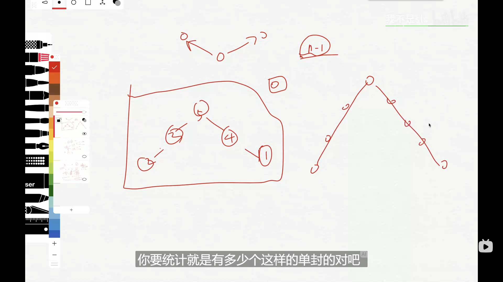
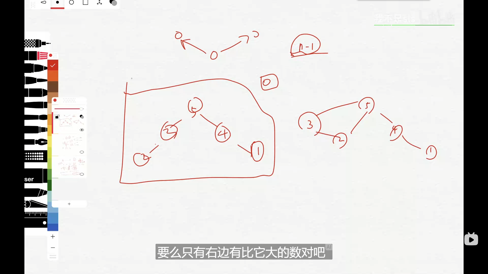

题目链接
描述
对于每一个长度为 $n$ 的排列 $a$，我们都可以按照下面的两种方式将它建成一个图：
1.对于每一个 $1≤i≤n$，找到一个最大的 $j$ 满足 $1≤j<i,a_j>a_i$，将 $i$ 和 $j$ 之间建一条无向边
2.对于每一个 $1≤i≤n$，找到一个最小的 $j$ 满足 $i<j≤n,a_j>a_i$，将 $i$ 和 $j$ 之间建一条无向边
注意：建立的边是在对应的下标 $i$,$j$ 之间建的边
请问有多少种长度为 $n$ 的排列 $a$ 满足，建出来的图含环
排列的数量可能会非常大，请输出它模上 $10^9+7$ 后的值
$n\leqslant 10 ^ 6$
思路
题面比较谜语人，大概翻译过来的意思就是，要找到含环的图的情况。但这样还是有点抽象，于是就反过来想。
去寻找不含环的边，那么在题意中，不含环的图是这样的：
对于一个数，要么只在左边有比他大的，要么只在右边有比他大的
而只有一类图满足这种情况
说人话就是找以最大值为顶点的单峰的图有多少个

把这种情况去掉的情况就是含环的情况了

对$n$的全排列为$n!$,以最大值为顶点的单峰图有$2^{n - 1}$种情况（摆法）：对于除了最大值的$n-1$个数，按降序摆放。每次摆放的时候都有在最大值左边和最大值右边两种选择，因此为$2^{n - 1}$
答案即为
$$n! - 2^{n - 1}$$
更多细节见代码（主要是取模）
代码
const int mod = 1e9 + 7;
const int N = 1e6 + 1;
ll f[N];
ll qmi(ll m, ll k, ll p){//求 m^k mod p，时间复杂度 O(logk)
ll res = 1 % p, t = m;
while (k){
if (k&1) res = res * t % p;
t = t * t % p;
k >>= 1;
}
return res;
}
void init(){//初始化处理阶乘数组
f[1] = f[0] = 1ll;
for (ll i = 2; i <= N; i++) {
f[i] = i * f[i - 1] % mod;
}
}
void solve(){
ll n;
cin >> n;
ll ans = qmi(2ll, n - 1, mod);
cout << (f[n] + mod - ans) % mod << endl; // 这个地方的 + mod 非常关键，防止负数，很多要取模的题都应注意
}
int main(){
ios::sync_with_stdio(false);
cin.tie(nullptr);
int kase;
cin >> kase;
init();
while (kase--) {
solve();
}
return 0;
}其实不太用得到快速幂，主要是在每次阶乘或平方的时候都要取模
不过刚好换个更好的快速幂板子了吧（
本作品采用知识共享署名-非商业性使用-相同方式共享 4.0 国际许可协议进行许可。
本文作者：Kotlin